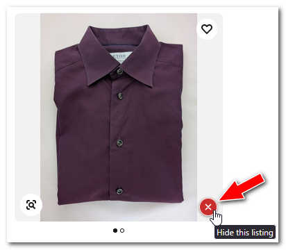
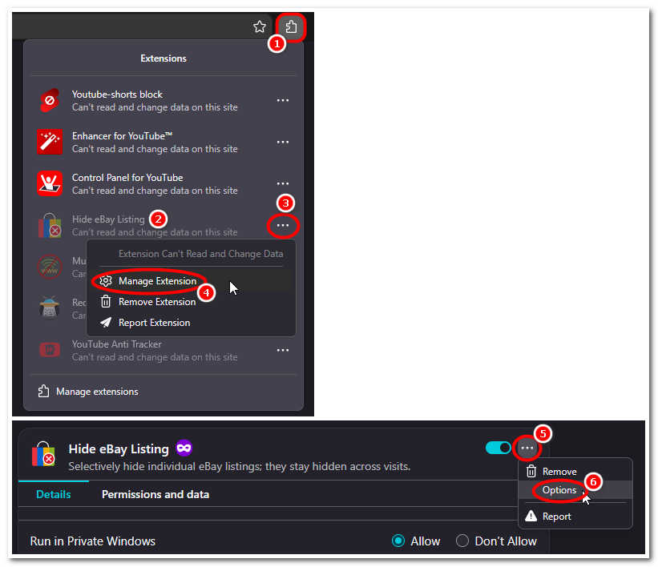
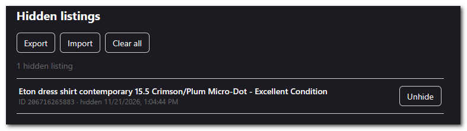
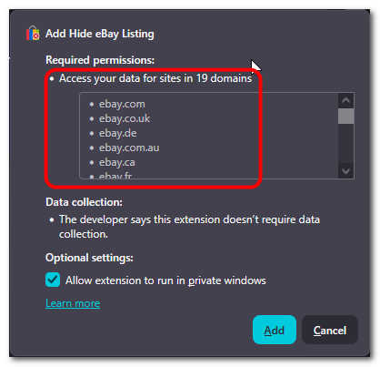
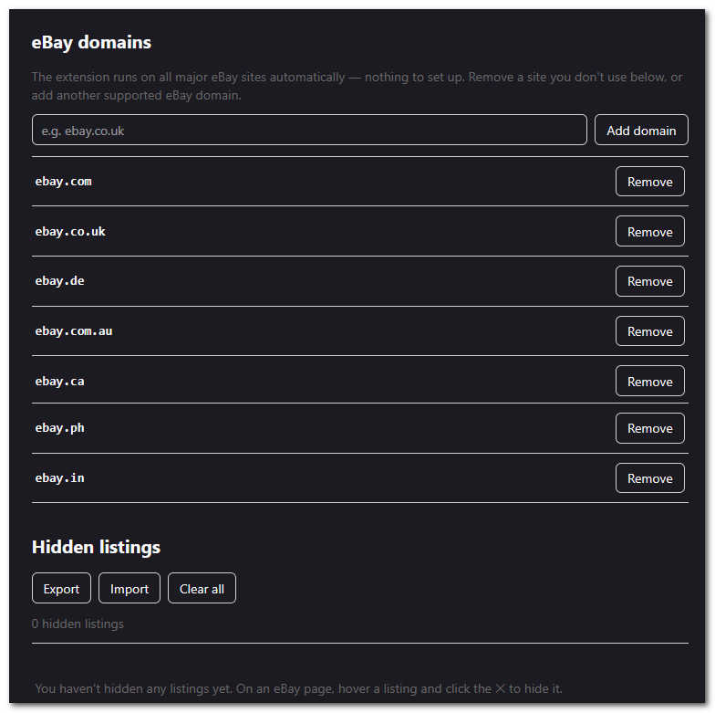

How to use
1. Hide a listing
On any eBay search or category page, hover over a listing's photo and click the red ✕ that appears in the bottom-right corner. The listing disappears immediately and stays hidden on every future visit.

2. Open Settings
Click the puzzle-piece extensions icon in your browser's toolbar, find Hide eBay Listing, and choose Manage Extension, then Options (labeled Preferences in some browsers).

3. Review or unhide listings
Settings lists every listing you've hidden, with its title and the date you hid it. Click Unhide to bring one back, or use Export / Import to back up or restore your hidden list, and Clear all to start over.

4. Manage eBay domains
Starting with version 0.3.0, all major eBay sites (ebay.com, ebay.co.uk, ebay.de, and 16 others) are enabled automatically — there's nothing to set up. When you install this extension, you must grant permissions to all eBay domains. All data about listings hidden by you is stored in your browser and never leaves your computer.

You can find the list of eBay domains in the extension's options. If you don't shop on a particular eBay site, click Remove next to it; you can always add it back later from the same screen.

Changelog
- 0.3.0 — submitted 2026-11-21, pending Mozilla review
- All 19 supported eBay domains are now enabled automatically the moment the extension installs — no more adding regional eBay sites one at a time from Settings.
- 0.2.1 — 2026-07-10
- Updated to handle eBay's redesigned search-results pages.
- 0.2.0 — 2026-06-19
-
- Added support for Chrome, alongside Firefox.
- Added the eBay domains section in Settings, so you can enable additional regional eBay sites.
- New extension icons.
- 0.1.0 — 2026-06-18
- Initial release: hide individual eBay listings, with hidden listings staying hidden across future visits.